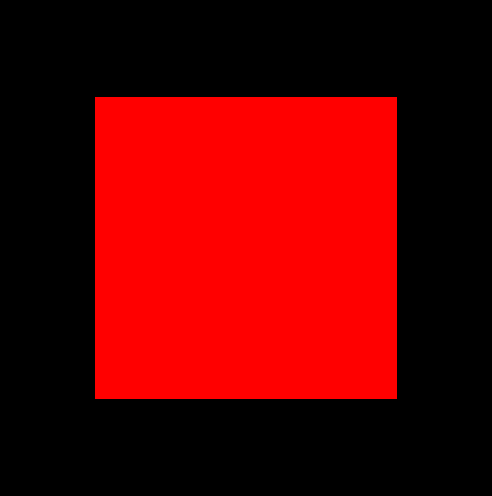
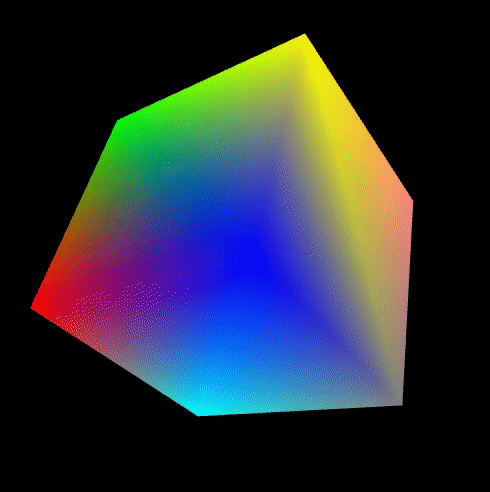

Lab 5: Shaders and Lighting
Creating a complete WebGL shader lab from scratch is a complex task, but I can provide you with a basic example to get you started. This example demonstrates the use of vertex and fragment shaders in WebGL. To create a complete lab, you'd need to set up an HTML page and shaders.
I have provided you with "Lab5.1.html". This example is currently missing a lot of things. For this first part of the lab I want you to set up a shader program which can render the cube defined using an IFS. This cube should be render as a solid color and should look like the image below.

The first step will be inspect the code provided to see what is missing. As you will observe we need implement both the vertex shader as well as the fragment shader. Have a think of what variables will be required and what needs to be done to pass that information to your shader. Below is the raw vertex information that should be used to draw the cube.
// Define the vertices for a cube
const vertices = new Float32Array([
-1, -1, -1,
1, -1, -1,
-1, 1, -1,
1, 1, -1,
-1, -1, 1,
1, -1, 1,
-1, 1, 1,
1, 1, 1,
]);
// Define indices to form triangles
const indices = new Uint16Array([
0, 1, 2, 1, 2, 3, // Front face
4, 5, 6, 5, 6, 7, // Back face
0, 1, 4, 1, 4, 5, // Bottom face
2, 3, 6, 3, 6, 7, // Top face
0, 2, 4, 2, 4, 6, // Left face
1, 3, 5, 3, 5, 7 // Right face
]);
const colors = new Float32Array([
// RGB color values for each vertex
1, 0, 0, // Red
0, 1, 0, // Green
0, 0, 1, // Blue
1, 1, 0, // Yellow
0, 1, 1, // Cyan
1, 0, 1, // Magenta
0.5, 0.5, 0.5, // Gray
1, 0.5, 0.5, // Light Red
]);
-
Step 1: Create a Buffer for Vertices and Indices
In WebGL, you need to create a buffer to store the vertices and indices of your cube. Vertices represent the points that make up the cube's geometry, and indices define how these vertices connect to form triangles or other shapes.
createBuffer() - Create a buffer bindBuffer(target, buffer) - Bind the buffer bufferData(target, data, usage) - Fill the buffer with data -
Step 2: Define Transformation Matrices for Modelview and Perspective Transformations
Transformation matrices are used to position and orient the cube within the 3D world. The modelview matrix defines the position and orientation of the cube in world space, while the perspective matrix sets up the camera's view and projection properties.
Matrix Libraries - Use a library like gl-matrix mat4.create() - Create a matrix mat4.identity() - Initialize the modelview matrix -
Step 3: Get Attribute and Uniform Variable Locations Matching the Shader
In your WebGL program, you'll have a vertex shader and a fragment shader. You need to obtain the locations of attributes (such as vertex positions) and uniforms (like transformation matrices) in your shaders. This allows you to send data from JavaScript to the shaders.
getAttribLocation(program, name) - Get attribute location getUniformLocation(program, name) - Get uniform location -
Step 4: Bind the Position Buffer
After creating the vertex buffer, you need to bind it to a WebGL context so that it can be used for rendering. This step ensures that the buffer containing the cube's vertices is available for rendering.
bindBuffer(target, buffer) - Bind the buffer vertexAttribPointer() - Specify the attribute layout enableVertexAttribArray() - Enable the attribute -
Step 5: Set Up the Perspective Projection Matrix
To create a realistic 3D view, you'll set up a perspective projection matrix. This matrix defines how objects are projected onto the 2D screen, creating a sense of depth and perspective.
mat4.perspective() - Set up perspective matrix //I am happy if you use the following paramters const fov = Math.PI / 4; // 45 degrees const aspect = canvas.width / canvas.height; const near = 0.1; const far = 100.0; mat4.perspective(projectionMatrix, fov, aspect, near, far); uniformMatrix4fv(location, transpose, data) - Set the perspective matrix as a uniform -
Step 6: Set Up the Modelview Matrix
The modelview matrix defines the position, rotation, and scale of the cube. By applying transformations to this matrix, you can position and orient the cube in the 3D world.
mat4.translate() - Translate the modelview matrix mat4.rotate() - Rotate the modelview matrix uniformMatrix4fv(location, transpose, data) - Set the modelview matrix as a uniform -
Step 7: Draw the Cube
Finally, you'll use WebGL's rendering functions to draw the cube. This involves configuring your shaders and attributes, setting the uniform values (including the transformation matrices), and invoking WebGL's drawing functions to render the cube.
bindBuffer(target, buffer) - Bind the index buffer drawElements(mode, count, type, offset) - Draw the cube using indices
Adding Colour and Motion
Modify the given template such that we colour each of the given vertices a different colour as seen below. Additionally apply a rotation such that you minic the behaviour of the cube in the following gif.
In order to do this, you should incorporate the following functions, createBuffer, bindBuffer, bufferData, enableVertexAttribArray and vertexAttribPointer. Additionally you will have to modify the given vertex shader to take in another attribute variable representing the colour. Do not forget That this process requires linking the variable to the shader using getAttribLocation.
For submission Lab 5.1 you are required to submit the Lab5.1.html file to moodle.More Advanced Shaders
In our previous classes, we delved into the concepts of Lambert and Phong shading techniques, exploring the nuances of light interaction and material properties in 3D rendering. However, in this section of the lab, we are embarking on a new journey into the world of cell shading. While Lambert and Phong shading are foundational techniques in computer graphics, cell shading offers a unique and distinctive aesthetic, often seen in various art styles and video games. Cell shading, also known as toon shading, allows us to create a visually striking, almost comic book-like appearance in our 3D models
Cell shading, also known as toon shading or comic book shading, is a non-photorealistic rendering (NPR) technique used in computer graphics to create a unique and stylized visual effect that resembles traditional 2D hand-drawn or painted artwork, such as cartoons or comics. Cell shading achieves this effect by simplifying the rendering process and using a limited number of discrete shades or tones to represent different areas of an object's surface.
In order to achieve this effect your code should quantize the incoming color's intensity based on a specified cell size and setting the pixel's color to a specific tone. This process is integral to achieving the characteristic appearance of cell shading, which simplifies shading by using a limited set of shading levels to create a stylized, cartoonish, or toon-like effect in computer graphics.
You should use ``Lab5.2.html" as the base for this problem and are only required to modify the vertex and fragment shader. To start you should implement Lambert shading using the lighting equation presented in class. Then modify the fragment shader as described in the descritpion above in order to achieve the effect seen below. For submission Lab 5.2 you are required to submit the Lab5.2.html file to moodle.